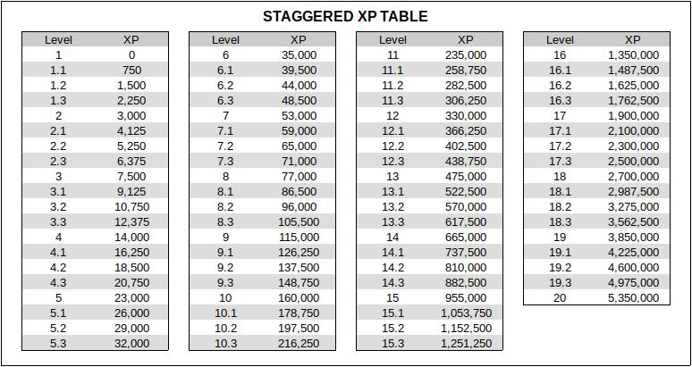
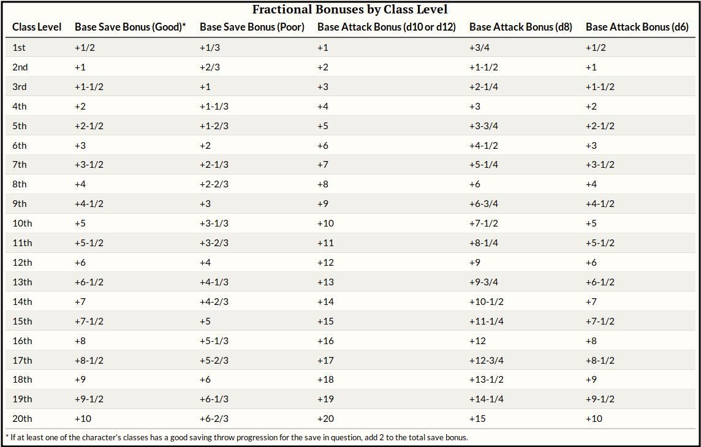

ADVANCEMENT
ADVANCEMENT
- Staggared Advancement
Each level of experience will be divided into four XP tiers, as described in the
Staggered Advancement
section of the Pathfinder Unchained rules. Advancement will be using the slow XP
table shown below:

- Fractional Base Bonuses
When playing characters multiclass, use the rules for
Fractional Bonuses
summarized in the table below:
